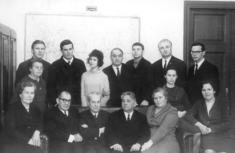

|
 Кафедра экономической географии ЛГУ им А.А. Жданова. Л.Н. Гумилев стоит в центре, С.Б. Лавров стоит вторым слева. В центре сидит заведующий кафедрой Б.Н. Семевский. Фото конца 60-х гг. любезно предоставлено вдовой С.Б. Лаврова - Валентиной Николаевной. |
С. Б. ЛавровЛев Гумилев. Судьба и идеи |
 1. От автора
1. От автора 
- 2. Детство
 3. Его университеты
3. Его университеты - 3.1. Недобрый, но любимый город
- 3.2. Злой гений Льва Гумилёва
- 3.3. Экспедиционные университеты
- 4. "Первая Голгофа"
- 5. Четыре года просвета
- 6. "Вторая Голгофа"
- 7. Ретро: рождение и первая жизнь евразийства
- 7.1. Петр Савицкий - лидер "ведущей тройки"
евразийства. Начало переписки
- 7.2. Трудные поиски "идеи-силы"
- 7.3. Выход на геополитику
- 7.4. Магистральные пути евразийства
- 7.5. Кризис евразийства и судьба П.Савицкого
- 8. Трудное рождение "Степной трилогии"
- 8.1. На воле
- 8.2. Кто такой Хара-Даван?
- 8.3. Время действия 1957-1960
гг.
- 8.4. Почему "Хунну"
- 8.5. Как могло случиться?
- 8.6. Расправа с "новичком"
- 8.7. Древние тюрки и будущая докторская
- 8.8. Л.Н. ведет криминалистическое расследование
- 9. Гумилёвское открытие Хазарии
- 9.1. История выходит на географию (Каспий:
"кроты" - профессионалы и любители)
- 9.2. И снова гетерохронность (от Каспия к
глобальности)
-
10. Конец 60-х гг.: новые книги, обретение уюта
- 10.1 Разграбление двух архивов
- 10.2. "Экологическая ниша"
- 10.3 Венец "Степной трилогии"
- 10.4. Чингис-хан: новое прочтение
- 10.5. Конец "черной легенды"? Неожиданные
союзники на западе
- 11. А было
ли иго?
- 11.1. Спор историков.
Родилась ли истина?
- 11.2.
Оккупация или симбиоз
- 11.3. Геополитика
Куликовской битвы. Становление
суперэтноса
- 12. Годы признания
- 12.1. Лучше было бы наоборот
- 12.2. Популярность мнимая и подлинная
- 12.3. Покой нам только снится
- 13. Свет и тени этногенеза
- 13.1. Этногенез: шанхайский вариант
- 13.2. Самое трудное - определить понятие
- 13.3.
Пассионарность: за и против. Был ли
пассионарен сам Л.Н.?
- 14. Уроки Льва Гумилёва
- Об авторе
- Указатель
имен
Подготовка электронного текста книги завершена в январе 2002 года.